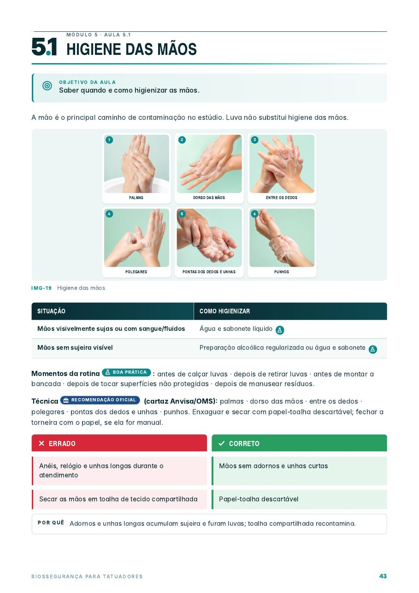
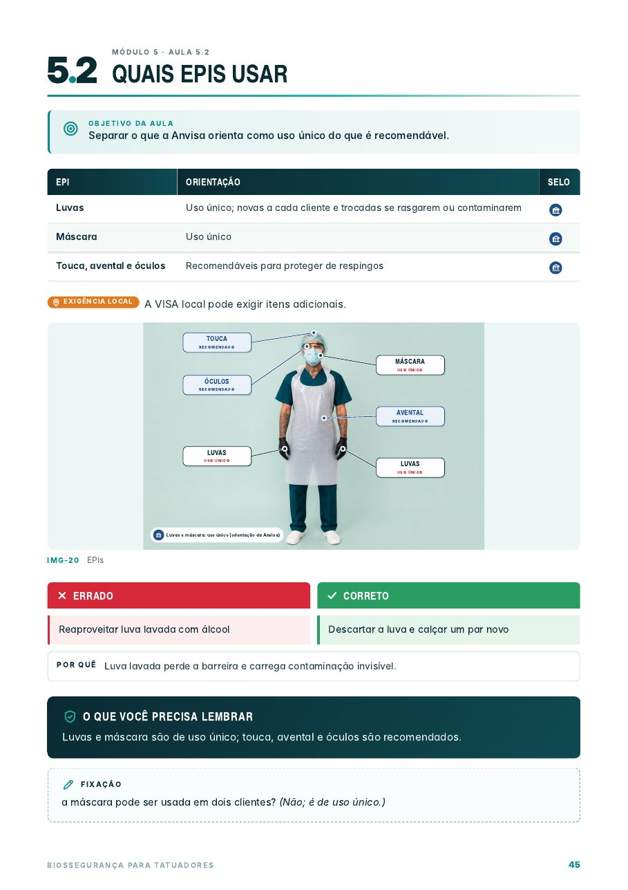
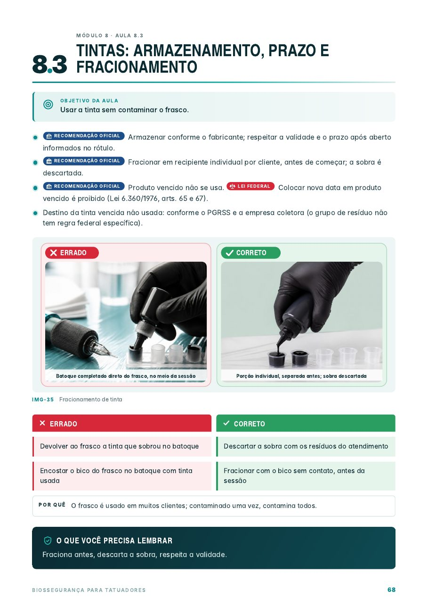
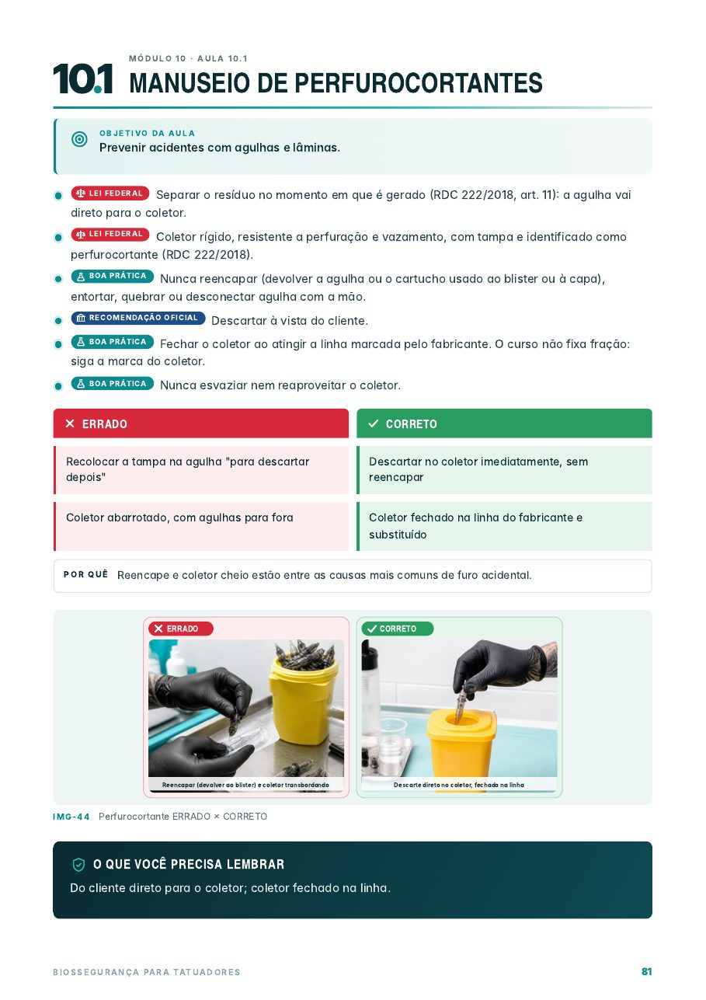
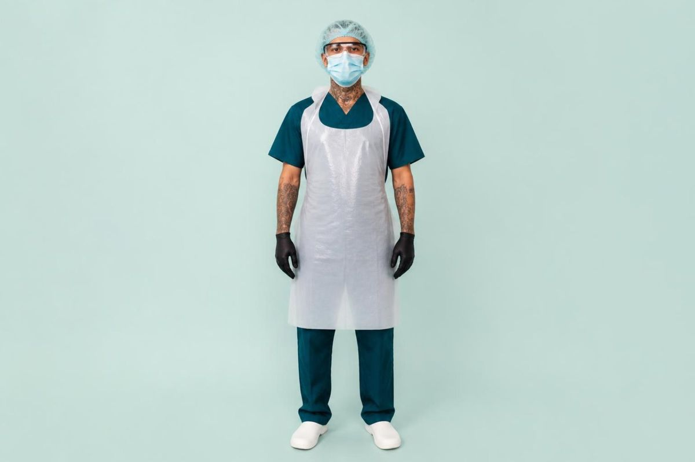

Se a Vigilância entrasse amanhã, você saberia o que mostrar?
A maioria dos tatuadores aprendeu biossegurança no boca a boca. Cada estúdio faz de um jeito, e na hora da inspeção ou de um acidente aparecem as dúvidas.
Você não sabe se algo é obrigatório no país inteiro, exigência da sua cidade ou apenas boa prática.
Dúvida sobre o que realmente esteriliza, como embalar e como provar que o ciclo funcionou.
Sem um passo a passo pronto, os primeiros minutos depois do acidente viram improviso.
Ficha do cliente, termo de consentimento, registros de limpeza e de esterilização, plano de resíduos.
Cada orientação vem com o peso dela
Ao lado de cada regra da apostila há um selo. Você bate o olho e sabe se é obrigação, exigência local ou recomendação.
Lei ou norma que vale em todo o Brasil.
Muda de cidade para cidade; a apostila ensina a consultar.
Orientação de órgão de saúde, como Anvisa e Ministério da Saúde.
Consenso técnico de biossegurança aplicado ao estúdio.
Dica de rotina de quem vive o dia a dia do estúdio.
12 módulos, do básico à inspeção
Aulas curtas, com objetivo, resumo e quadro Errado × Correto. Dá para estudar um módulo por dia.
Páginas ilustradas, diretas ao ponto




Além das aulas, os materiais da rotina
- 12Checklistsabertura, bancada, entre clientes, fechamento e mais
- 10POPsprocedimentos operacionais para adaptar ao seu estúdio
- 14Formuláriosficha do cliente, anamnese, termo de consentimento, registros
- 1Modelo de PGRSSplano de gerenciamento de resíduos
- 10Estudos de casosituações reais de estúdio, com a conduta certa
- 30Questões na avaliação finalcom gabarito, mais 37 exercícios nos módulos

Feita para quem vive o estúdio
É para você se
- Você tatua e quer uma rotina de biossegurança organizada e explicável.
- Está abrindo ou regularizando o estúdio e quer se preparar para a inspeção.
- Tem equipe e precisa de checklists e POPs para padronizar o trabalho.
- Está começando e quer aprender do jeito certo desde o primeiro cliente.
Não é para você se
- Você procura aulas de técnica de tatuagem, traço ou sombreamento.
- Quer um documento que substitua a licença sanitária: ela é emitida pela Vigilância da sua cidade.
- Prefere videoaulas: este material é uma apostila em PDF.
Comece hoje a organizar a biossegurança do seu estúdio
Você recebe o PDF completo logo após a confirmação do pagamento. Pode ler no celular, no computador ou imprimir os checklists e formulários.
Garantia de 7 dias. Se não for o que você esperava, peça o reembolso pela plataforma de pagamento dentro do prazo.
- Apostila completa em PDF, 155 páginas
- 12 checklists, 10 POPs e 14 formulários
- Modelo de PGRSS e modelo de certificado
- Avaliação final com gabarito
Pagamento seguro pela plataforma de vendas. Curso livre.
Perguntas frequentes
Como recebo o material?
O PDF fica disponível para download logo após a confirmação do pagamento, pela própria plataforma de vendas.
A apostila ensina a tatuar?
Não. O conteúdo é só biossegurança aplicada ao estúdio de tatuagem.
Serve para quem está abrindo o estúdio?
Sim. O módulo 3 trata de legislação e regularização, e o módulo 12 mostra como se preparar para a inspeção.
Vale para qualquer cidade?
As regras federais valem em todo o Brasil. As exigências locais mudam de cidade para cidade, e a apostila mostra como consultar a Vigilância Sanitária da sua.
O certificado substitui a licença sanitária?
Não. É um certificado de curso livre. A licença sanitária é emitida pela Vigilância Sanitária do seu município.
E se eu não gostar?
Você tem 7 dias de garantia para pedir o reembolso pela plataforma de pagamento.